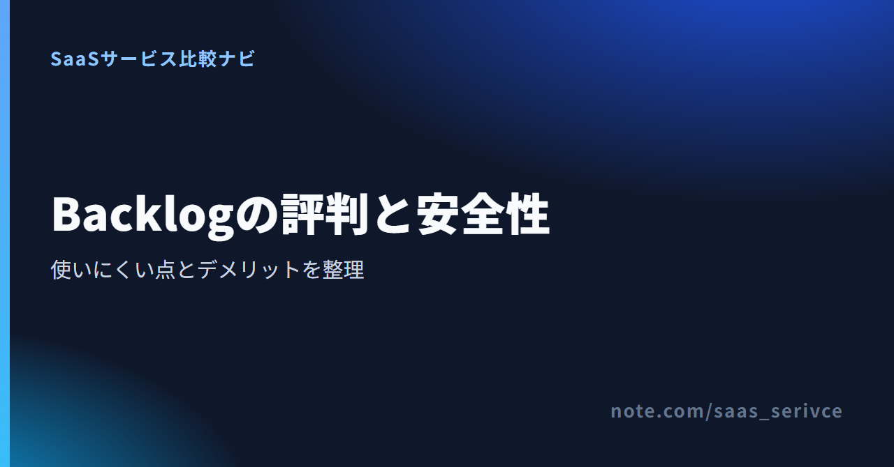

Backlogのセキュリティと評判｜使いにくい点・デメリットを解説
Backlogは、課題の担当者や期限を記録し、チーム内外のやり取りを案件ごとにまとめるプロジェクト管理ツールです。
導入前に気になる評判や使いにくいと言われる理由に加え、セキュリティ対策と社内審査で見るべき項目を整理します。
Backlogの評判とセキュリティの早見
Backlogは、課題と会話を一か所にまとめたいチームに向いています。ただし、安全対策はサービス側の機能だけで完結しません。権限や認証を自社でどう設定するかも、選定時に決めておきます。
- 良い点：担当・期限・コメントを共有
- 気になる点：検索・通知・初期設定
- 安全性：暗号化・認証・権限を確認
- 向くチーム：社内外で案件を継続管理
- 判断材料：公式仕様と口コミを分ける
主な機能と無料トライアルの入口を確認できます。

良い評判は課題の見える化と社外メンバーとの共有
ITreview、ITトレンド、BOXILの公開レビューには、投稿者の役割や企業規模も載っています。平均点だけを見るより、誰がどの機能を評価したのかを追うと、実際の使い方を想像しやすくなります。
管理者は担当・期限・進捗を追いやすい
ITreviewの公開レビューには、中堅企業の経営・企画職による投稿があります。課題ごとに担当者と状態を持たせ、全体の進捗を見渡せる点が挙げられています。
一方、課題が乱立すると整理の手間が増えます。更新が一部の人に偏るという指摘もあり、管理者は課題の整理まで含めて使い方を決める必要があります。
一般ユーザーはコメントと履歴を共有しやすい
ITreviewの大企業・保守運用担当者の投稿では、コメントで経緯を残せることと、ファイルやWikiを同じ案件にまとめられることが評価されています。後から参加した人も、判断の流れと関連資料を追えます。
ただし、課題が増えると一覧が見づらくなり、通知も多くなるという指摘があります。長く使うほど記録は蓄積しますが、必要な情報を探す手間も増えます。
社外メンバーを案件へ招待しやすい
中堅企業のデザイン職による公開レビューには、取引先との課題管理に使う例があります。メールと違って、タスクごとに資料や更新履歴を残せる点が利点です。
社外メンバーは、参加プロジェクトを絞れるゲスト権限で招待できます。開発案件ではWikiに加え、GitとSubversionも同じプロジェクトで扱えます。
一方、権限の設定は管理者の担当です。招待は簡単でも、見せてよい情報の範囲は別に決める必要があります。
「使いにくい」と言われる理由とデメリット
Backlogが使いにくいと言われる原因は一つではありません。社内ルールで解ける不満、契約プランに由来する制限、製品設計との相性に分けると、乗り換えが必要か判断できます。
慣れと社内ルールで解ける不満
課題は、状態、種別、カテゴリー、マイルストーン、担当者などで絞り込めます。よく使う条件は検索フィルターとして保存できますが、保存後の条件は編集できません。条件を変えたいときは、新しい条件として登録し直します。
通知メールは、個人設定からプロジェクトやメールの種類ごとに変更できます。「自分宛てのお知らせだけ」に絞る設定も用意されています。
検索条件と通知を調整して不満が減るなら、すぐに乗り換える必要はありません。課題の種別やカテゴリーが人によって違う場合は、登録ルールもそろえておきます。
契約プランを変えないと解けない制限
ガントチャートは現行Standard以上で利用できます。IP制限は現行Standard以上ですが、登録できる数はプランで異なります。組織全体への2FA必須化は現行Premium以上、アクセスログは現行Platinumで提供されます。
必要な機能が契約中のプランに含まれない場合、操作に慣れても解決しません。この場合は、プラン変更にかかる費用と、別製品へ移る負担を比べます。
製品設計との相性が出る不満
公開レビューには、課題が増えた後の検索と一覧表示への不満があります。検索条件は保存できる一方、保存済み条件を直接編集できない点は仕様上の制約です。
モバイル操作や細かなカスタマイズにも、不満の声があります。普段使う端末で検索、担当変更、コメントまで試し、それでも不満が残るなら、製品との相性を見直す段階です。
現在のチームで試したい操作を、無料トライアルから確かめられます。
Backlogのセキュリティ対策と取得認証
Backlogは通信をTLSで暗号化し、バックアップと24時間365日の監視を実施しています。提供者側では不正アクセスにも備えていますが、利用企業の権限設定や退職者対応までは代行されません。
暗号化・バックアップ・監視で守る範囲
TLSは、利用者の端末とBacklogの間を流れる通信内容を守ります。バックアップはデータ障害に備える対策、24時間365日の監視は障害や異常の検知を担います。
これらはサービス基盤を守る対策です。ただし、誤った相手をプロジェクトへ招待し、情報が見える状態になることまでは防げません。
認証・アクセス制御で守る範囲
不正アクセスへの備えとして、利用者は2FAを設定できます。組織全体への2FA必須化は現行Premium以上、IP制限は現行Standard以上、アクセスログは現行Platinumで使えます。
三つの役割は別です。IP制限は接続元を限定し、2FAはログイン時の本人確認を補います。アクセスログは事後調査に使う記録です。
取得済み認証から確認できること
ヌーラボはISO/IEC 27001、27017、27018、27701の認証を案内しています。これらは、情報セキュリティ、クラウドサービス、クラウド上の個人情報、プライバシー情報について、提供者の管理体制を調べる材料になります。
認証は、提供者の管理体制を示します。利用企業による誤共有や権限の残置を防ぐ機能ではありません。
暗号化、バックアップ、アクセス制御、取得済み認証の一次情報を確認できます。
セキュリティチェックシートで社内審査の項目を確認する
社内審査では、まずヌーラボの記入済みチェックシートとホワイトペーパーを使います。公開資料で足りない項目だけを洗い出せば、独自様式への回答依頼が必要か判断できます。
記入済みシートと公開資料で回答できる項目
チェックシートでは、次の項目を自社基準に当てはめます。
- データの保存と暗号化
- バックアップと障害対応
- 外部委託先の管理
- 認証方式とアクセス制御
- 操作記録やアクセスログ
- 退職者・異動者のアカウント停止
サービス側の対策と利用企業側の設定は別です。同じ欄で混同しないようにします。たとえば、バックアップは提供者が担います。一方、退職者をいつ削除するかは、自社で手順を定めます。
社内審査に使える記入済み資料の入手先です。
独自様式への回答を依頼する場合
公開資料で回答できない設問が残る場合は、ヌーラボへ自社様式への記入を依頼します。現行Premiumは有料オプション、Platinumは年1回まで無償です。StarterとStandardは回答サービスの対象外です。
先に記入済み資料を確認し、提供者の回答が必要な設問だけを残します。契約候補のプランが回答サービスの対象かどうかも、同時に確認します。
導入前に決める権限・認証・退職者対応
管理者、一般ユーザー、ゲストでは、操作できる範囲が異なります。個人の2FAと組織全体への必須化は分けて考え、必要な機能が現行プランに含まれるか確認します。
管理者・一般ユーザー・ゲストの範囲を決める
管理者は組織全体を設定できます。一般ユーザーは参加プロジェクト、ゲストは許可されたプロジェクトだけを閲覧・操作します。
社外の協力会社にはゲストを割り当てます。試用時には、別の案件が見えないことまで確かめます。管理者権限は、組織設定を担当する人だけに絞ります。
2FA・IP制限・アクセスログの必要性を決める
個人の2FAは各利用者が設定します。組織全体への必須化は現行Premium以上の機能です。
Nulab PassのSAML認証や監査ログは、IP制限やアクセスログとは別の機能です。必要な認証方式と記録を先に決めると、候補プランを絞れます。
外部メンバーと退職者の削除手順を決める
外部メンバーの契約終了日や社員の退職日を起点に、削除担当と引き継ぎ先を決めます。参加者の見直しは人事異動や契約更新の時期に合わせます。
料金と無料トライアルは必要な安全機能から選ぶ
Backlogは日本円建てです。現行プランから新しい料金体系へ切り替わる時期です。人数だけで選ばず、必要なセキュリティ機能から候補を絞ります。
無料トライアルで先に確かめる操作
30日間のトライアルでは、正式登録時に支払い情報を登録します。正式登録しなければ、終了後は利用停止となります。課題の登録だけで終えず、検索、通知、権限、外部メンバーの招待まで試します。
現行Freeは10ユーザー、1プロジェクト、総容量100MB、ドキュメント5件です。2027年1月1日に新Freeへ移行し、ユーザー上限は5名になります。既存の6〜10名は継続できますが、新しいユーザーは追加できません。
必要な安全機能からプランを絞る
現行Starterは30ユーザーまでです。現行Standard以上ではユーザー数に上限がなく、ガントチャートとIP制限を利用できます。組織全体への2FA必須化は現行Premium以上、アクセスログは現行Platinumが対象です。
2027年1月1日からはEconomy、Business、Professionalへ移行します。既存契約は、同日以降の最初の更新日から新体系へ切り替わります。
ここまで挙げた安全機能は、現行プランに基づく情報です。新体系にそのまま当てはめず、契約日と更新日に適用される機能表を見て選びます。Backlogの利用料は日本円建てです。
日本からの支払いと解約条件を確認する
支払いは銀行振込とクレジットカードに対応しています。Visa、Mastercard、American Express、JCB、Discover、Diners Clubを利用可能です。
請求書と領収書は、契約管理者が組織設定のプラン画面からダウンロードできます。有料契約を解約しても契約期間末までは利用できますが、期間途中の返金はありません。
ダウングレードは原則として次の利用期間から適用されます。下位プランの人数やプロジェクト数を超えている間は、プランを変更できません。有料プランからFreeへのダウングレードにも対応していません。
最新のプランと無料トライアルの開始条件を確認できます。
Backlogの評判と安全性に関するよくある質問
情報漏洩への備えやチェックシートの扱い、少人数での使い勝手を判断するときは、提供者側の対策と自社側の設定を分けて考えます。
Backlogで情報漏洩を防ぐには何を設定すればよい？
個人の2FAを設定し、管理者、一般ユーザー、ゲストの参加範囲を分けます。会社の基準に応じて、IP制限やアクセスログを含む現行プランを選びます。
セキュリティチェックシートはどこで入手できる？
ヌーラボの公式ページから記入済みチェックシートを入手できます。ホワイトペーパーと合わせて、自社の審査項目へ転記します。
独自様式への回答は、現行Premiumでは有料、Platinumでは年1回まで無償です。StarterとStandardは対象外なので、公開資料で答えられない設問を先に抽出します。
Backlogは少人数のチームでも使いやすい？
少人数でも使えますが、人数だけで向き不向きは決まりません。現行Freeの範囲で足りるか、ガントやIP制限などの有料機能が必要かで費用が変わります。
少人数でも、課題、コメント、Wikiを案件ごとに残したいチームには候補になります。
「使いにくい」と感じたらすぐ乗り換えるべき？
まず検索フィルターと通知設定を試します。保存済み検索条件の扱い、一覧性、モバイル操作、カスタマイズが合わない場合は、現行プランを変更する場合と、代替ツールへ乗り換える場合の負担を比べます。
まとめ：安全対策と使い方の両方が合うかで選ぶ
Backlogは、社内外の案件を継続して管理し、課題の付け方をチームでそろえられる会社に向いています。大量の課題を細かくカスタマイズしたい場合は、検索や一覧の使い勝手を慎重に試してください。
- 向く条件：課題と会話を案件ごとに残したい
- 慎重に選ぶ条件：検索や細かな設定を最優先する
- 最終確認：契約時点のプランと必要な安全機能
- 社内審査：公開資料で不足する設問を抽出
導入前に機能を確認し、そのまま無料トライアルへ進めます。